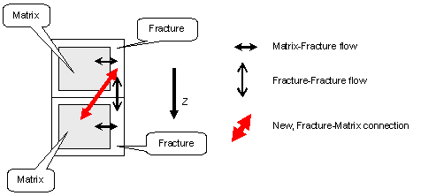
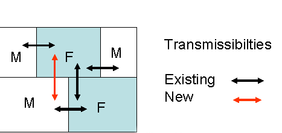

It is now also possible to represent re-imbibition from a fracture cell by the matrix cell below it. In this case the transmissibility between the matrix and fracture cells is a conventional spatial one, since the two cells are not superimposed on one another, and the properties of the two cells contribute to the transmissibility in exactly the same way as for the transmissibility between two neighboring fracture cells, or two neighboring matrix cells. See "Transmissibility calculations" for the details of this calculation. This modeling is most appropriate when the physical matrix block size ( as used in the Kazemi formula for the usual matrix-fracture transmissibility multiplier represented by the SIGMA and SIGMAV keywords) is comparable to the size of the grid cell rather than significantly different from it, so that the environment of a lower matrix physical block also comprises neighboring fracture cells rather than just its own fracture cell.

Figure 76.1 shows this new transmissibility on a picture of the two physical cells (that is the matrix and fracture cells occupy the same physical location.) This figure appears to show the lower matrix disconnected from the upper fracture by its own surrounding fracture, but this is only for presentation purposes: there will always be some contact between the upper fracture and lower matrix. This is schematically represented in figure 76.2, where the lower matrix and fracture are shown as single adjacent blocks, but the upper matrix is split in two, one half abutting the lower matrix (a disconnection in dual porosity but a connection in dual permeability) and one half abutting the lower fracture (not represented in the model, but conceptually possible). The upper fracture contacts both lower fracture and lower matrix.

The extent of the contact between the upper fracture and lower matrix is a variable of the model, and hence a new multiplier is applied to the transmissibility between these cells, to represent this effective contact area between the matrix and the fracture, which will be different from the contact area between the two vertically neighboring fracture cells, or two vertically neighboring matrix cells. This contact area multiplier is specified by the keywords BTOBALFA or BTOBALFV; the former specifies a single value for the whole grid, while the latter specifies it cell by cell. The presence of these keywords also activates these additional transmissibilities, which will otherwise not be present.
ECLIPSE 100
In ECLIPSE 100, block-to-block connections between LGRs and their parents or adjacent LGRS are only supported for in-place LGRs.